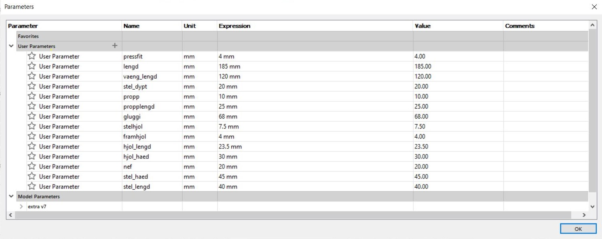
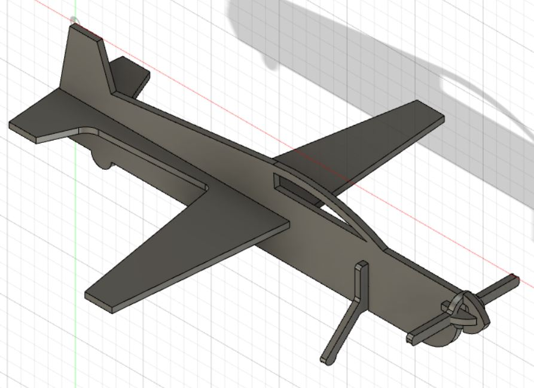
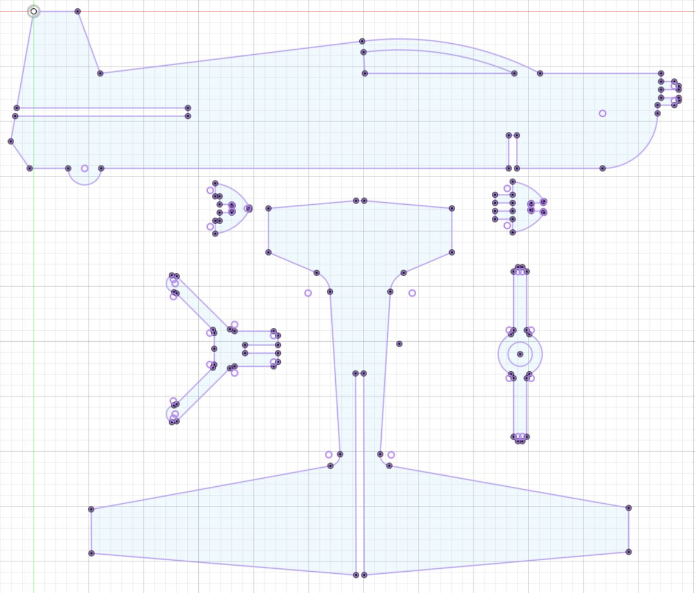
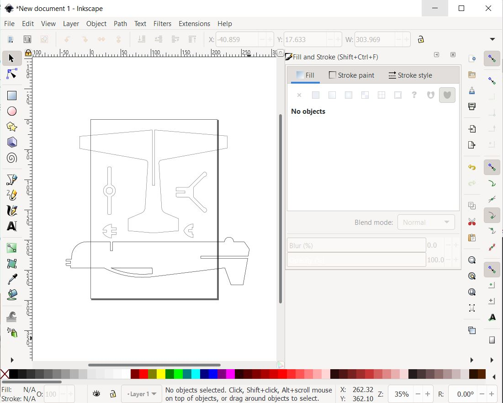
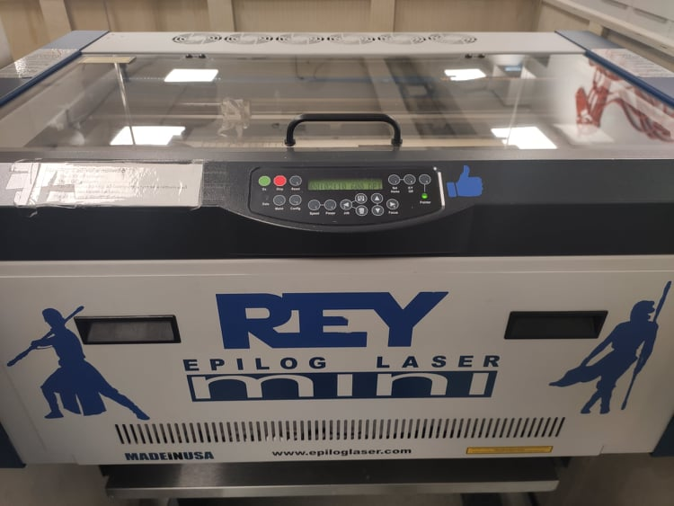
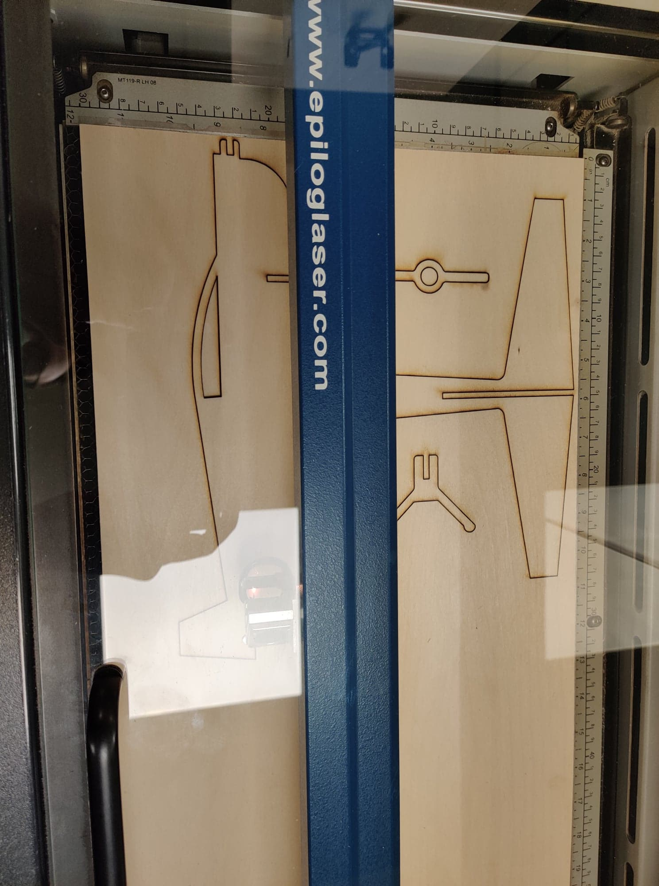
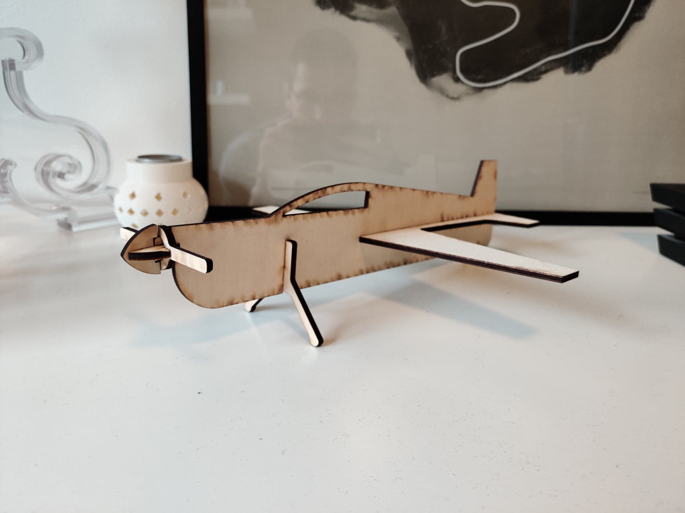

Einstaklingsverkefni 2 - Tölvustuddur skurður
Í þessu verkefni átti maður að hanna módel af byggingareiningum. Módelið átti að vera fest saman með svokallaðri press-fit aðferð
Undirbúningur
Það fyrsta sem að ég þurfti að gera var að velja mér verkefni til þess að hanna og skera út. Þær voru ekki margar hugmyndirnar sem að mér datt í hug en ég að hluturinn hefði notagildi en mér datt því miður ekkert svoleiðis verkefni í hug. Eftir að hafa velt þessu verkefni fyrir mér í dágóða stund þá sá ég eitt módel af flugvél sem að var inní herbergi bróður míns.  Sjálfur hef ég mikinn áhuga á flugi og fannst mér það verkefni ekki svo fólkið heldur þegar að ég fór að velta því fyrir mér hvernig ég ætti að teikna þetta. Samt fannst mér módelið sem að var hjá bróður mínum aðeins of erfitt, þar sem að vélin var tvíþekja þannig að ég fór að leita að öðrum einfaldari módelum. Þá fann ég tvö önnur módel geislar.is og hobbyking.com. Þar sem að ég nýtti mér þau módel til stuðnings við hönnun verkefnsins. Áður en ég gat hafist handa við að teikna módelið mitt þurfti ég að ná í Fusion360. Einnig þurfti ég að ná í hugbúnað fyrir laserskurðinn, var nemendum bent á að ná í Inkscape.
Sjálfur hef ég mikinn áhuga á flugi og fannst mér það verkefni ekki svo fólkið heldur þegar að ég fór að velta því fyrir mér hvernig ég ætti að teikna þetta. Samt fannst mér módelið sem að var hjá bróður mínum aðeins of erfitt, þar sem að vélin var tvíþekja þannig að ég fór að leita að öðrum einfaldari módelum. Þá fann ég tvö önnur módel geislar.is og hobbyking.com. Þar sem að ég nýtti mér þau módel til stuðnings við hönnun verkefnsins. Áður en ég gat hafist handa við að teikna módelið mitt þurfti ég að ná í Fusion360. Einnig þurfti ég að ná í hugbúnað fyrir laserskurðinn, var nemendum bent á að ná í Inkscape.
Framkvæmd verkefnis
Hönnun
Eftir að hafa skoðað módelin 3 betur og velt því fyrir mér hvernig ég ætti að gera þetta þá ákvað ég bara að byrja. Módelið átti að vera parametrískt. Á myndinni hér að neðan má sjá parametrana
 Eftir þó nokkra vinnu við að teikna hlutina og setja þá saman þá var lokamyndin af flugvélinni í fusion svona  Eftir að allir líkamspartarnir voru tilbúnir þá þurfti að setja þá alla í sama plan til þess að það væri hægt að exporta teikningunni í DXF-skrá til þess að setja hlutina í sama plan var notast við myndband frá kennara en það má nálgast hér. Eftir að hafa fylgt myndbandinu leit verkefnið svona út í Fusion Hópaverkefni
Nú var farið í FabLab til þess að framkvæma hópaverkefnið og reikna kerf, en það verkefni var unnið með Birtu Hákonardóttur og Elísu Ósk Jónsdóttur, má nálgast á heimasíður Elísu í hnappinum hérna fyrir neðan
Eftir að því verkefni var lokið gátum við bætt við parameter sem að kallaður var kerf einnig mældum við þykktina á viðnum en hann var u.þ.b. 3,7mm en ekki 4mm því var thykkt parameternum breytt. Síðan var flötu teikningunni offestað út á við um kerf, sem leiddi til þess að hlutirnir áttu að passa betur saman
Undirbúningur fyrir laserskurð
Næsta skref var að flytja flötu teikninguna úr Fusion í Inkscape svo að hægt væri að prenta hana út, einfaldlega vistaði maður teikningunna sem DXF sem að var svo opnuð í Inkscape. Í Inkscape þurfti að byrja á því að minnka línuþykkt teikningarinnar. Það var gert með því að velja "Object - Fill and Stroke - Stroke style" og stilla "Width" á 0,02 mm. Þá gat maður auðveldlega séð tvær útlínur af teikningunni, sem að gerðist þegar að við notuðum Offset í Fusion, byrjað var á því að eyða hverri innri línu fyrir sig þar sem að það voru línurnar sem að ekki var gert ráð fyrir kerf.
Eftir að það var búið þurfti að skoða hvort að nóðurnar sem að skildu á milli lína voru ekki alveg örugglega tengdar áður en maður byrjaði að skera. Til þess að prófa það var farið eftir leiðbeiningum þessa myndbands hér eftir að það var komið var hægt að vista skjalið sem pdf sem var fært inn á USB-lykil. Má sjá mynd af skjalinu í Inkscape hér að neðan
Laserskurður
Laser skurðurinn var framkæmdur í skera í FabLab sem kallaður er Rey, en kerf prófunin fór einnig fram í þessum laserskera
USB-lyklinum með pdf skránni var tengdur við tölvu sem að var tengd við laserskerann, í tölvunni opnaði maður pdf-skránna sína og prentaði síðan út sína skrá, en áður en það var gert þurfti að stilla prentarann rétt en leiðbeiningar að því var að finna við hliðina á tölvunni. Þegar að því var lokið ýtti maður print og þá byrjaði laserskerinn að skera. Þá byrjaði skerinn að skera út teikninguna mynd af skeranum að skera út verkefnið mitt má sjá hér að neðan
Niðurstöður
Mynd af flugvélinni í allri sinni dýrð má sjá hér
Vélin kom ekki alveg eins vel og ég átti vona á. Í Fusion fannst mér hún líta vel út en eftir að ég setti hana saman fannst mér eitthvað ekki nógu flott við hana. Hún var kannski aðeins of löng og líka er nefið aðeins of stórt að mínu mati. En þrátt fyrir það heppnaðist verkefnið mjög vel. Allir hlutirnir pössuðu vel saman með press-fit aðferðinni, ekki of þröngt en ekki heldur of laust heppnaðist bara mjög vel.
Tímaskráning
Tímaskráning fyrir þetta verkefni má sjá í töflunni hér að neðan
Tímaskráning fyrir verkefni 2
| Velja verkefni | 1 klst |
| Teikna í Fusion | 7 klst |
| Inkscape | 2 klst |
| Kerf próf | 2 klst |
| Undirbúningur fyrir skurð og skurður | 2 klst |
| Vefsíðugerð | 4 klst |
| 18 klst |